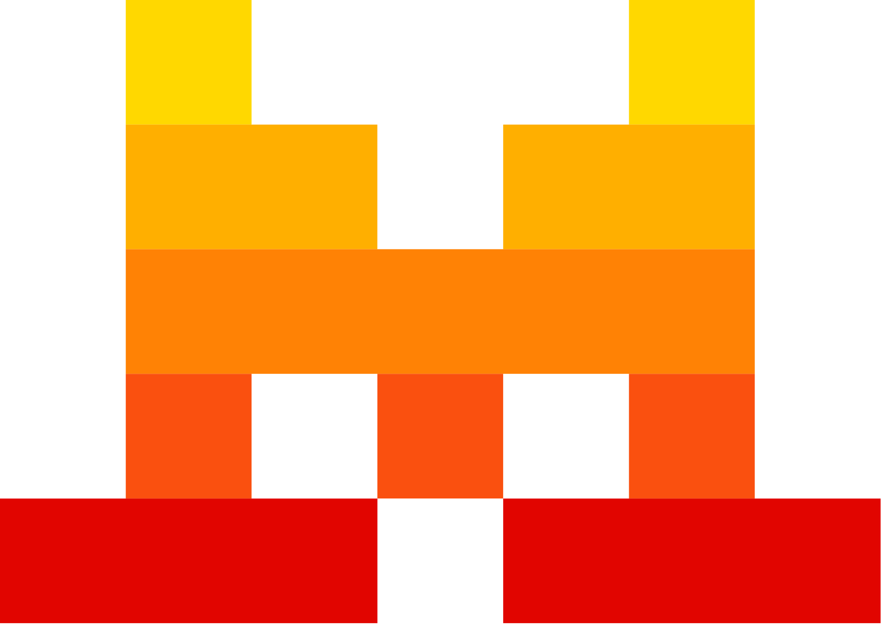

תעודת זהות
שנת הקמה: 2023
מדינת מקור: צרפת
מייסדים: ארתור מנש, גיום למפל, טימותה לקרואה
מוצרים מרכזיים: Mistral Large, Mistral Small, Codestral, Le Chat
European AI Company
חברת AI צרפתית בולטת המתמקדת במודלי שפה יעילים, מודלים פתוחים וכלי AI לאירופה ולעולם.

שנת הקמה: 2023
מדינת מקור: צרפת
מייסדים: ארתור מנש, גיום למפל, טימותה לקרואה
מוצרים מרכזיים: Mistral Large, Mistral Small, Codestral, Le Chat
Mistral הוא שם של רוח חזקה ומוכרת בדרום צרפת.
השם מתאים לחברה צרפתית ששואפת להביא כוח, מהירות ותנועה חדשה לעולם ה־AI.
Mistral AI נוסדה ב־2023 על ידי חוקרים ומהנדסים בעלי רקע במעבדות AI מובילות.
החברה התמקדה מוקדם במודלי שפה יעילים ובגישה פתוחה יותר לחלק מן המודלים.
החברה הפכה לסמל של התעוררות אירופית בתחום מודלי השפה, במיוחד סביב מודלים פתוחים ויעילים.
2023: הקמת Mistral AI.
2023: פרסום מודלים ראשונים שזכו לתשומת לב קהילתית.
2024: הרחבת משפחת המודלים והשקת כלים מסחריים.
2024 ואילך: Mistral הופכת לשחקנית אירופית מרכזית במרוץ ה־AI.
Mistral AI חיזקה את הרעיון שאירופה יכולה להיות שחקנית משמעותית בבניית מודלי שפה ותשתיות AI.
הלוגו מוצג לצורכי זיהוי חינוכי ומוזיאלי בלבד.